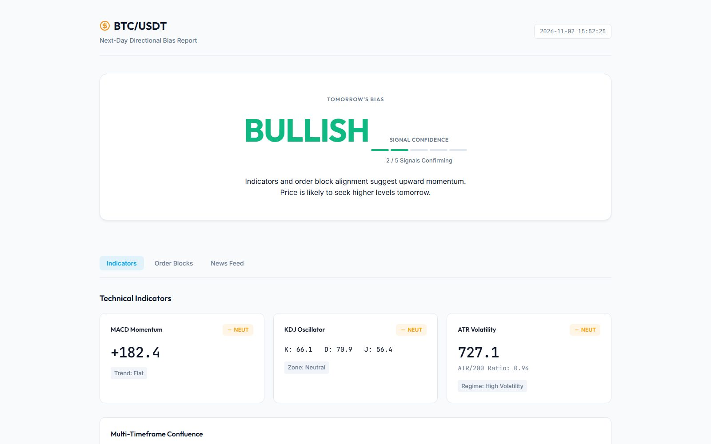
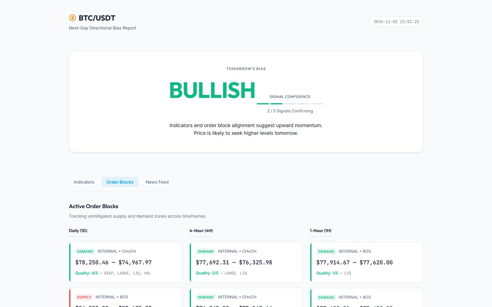
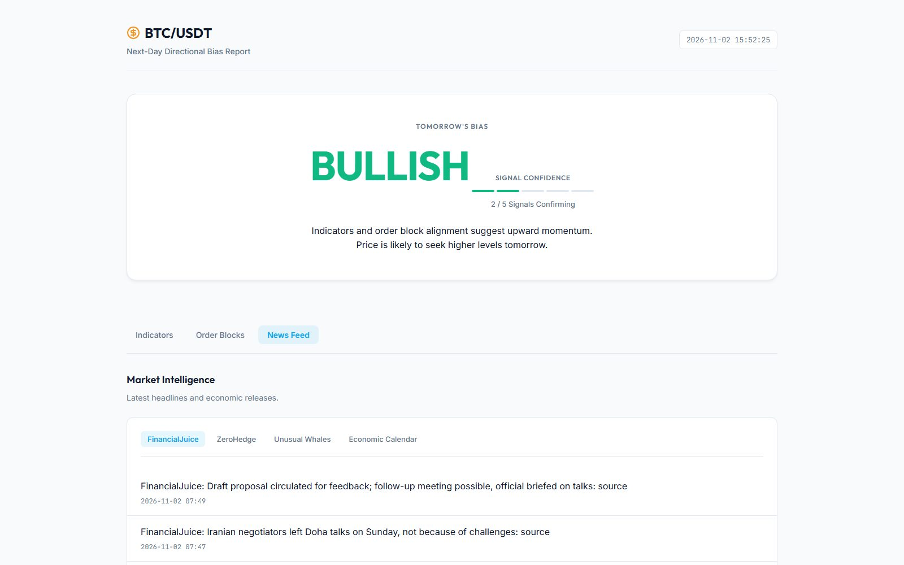

01
One verdict
MACD, KDJ and ATR are calculated by hand and weighed into a bias with a confidence bar.
Reads the Bitcoin market and writes a one-page report: bullish, bearish or neutral for tomorrow.

MACD, KDJ and ATR are calculated by hand and weighed into a bias with a confidence bar.

Supply and demand zones from the daily, 4-hour and 1-hour charts, graded for quality.

Headlines are pulled in next to the numbers so the context stays with the call.
Run it with one double-click on Windows. It builds its own environment and opens the report in the browser.